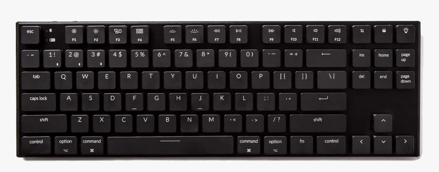

Welcome to the Luminatype
At LuminaType, we believe that typing should be an enlightening experience. We are dedicated to providing you with keyboards that not only illuminate your workspace but also elevate your typing journey to a whole new level.
With LuminaType, every keystroke becomes a work of art. Our keyboards are meticulously designed to combine aesthetics, functionality, and innovation. Whether you're a professional writer, a passionate gamer, or a creative enthusiast, our keyboards are crafted to meet your specific needs and enhance your productivity.
Experience the brilliance of our backlit keyboards that offer customizable lighting effects, allowing you to create the perfect ambiance for your workspace. Immerse yourself in a world where typing is not only efficient but also visually stunning.
We pride ourselves on delivering exceptional quality and precision. Our keyboards are engineered with state-of-the-art technology and premium materials, ensuring durability and comfort for prolonged use. The whisper-quiet mechanical switches provide the perfect balance between tactile feedback and noise reduction, resulting in a seamless and immersive typing experience.

At LuminaType, we understand the importance of personalization. Our intuitive software enables you to customize your keyboard to suit your preferences, from programming macros to creating unique lighting profiles. Take control of your typing experience and tailor it to match your individual style and workflow.
Join our community of passionate typists who appreciate the art of illumination. We are committed to providing outstanding customer support and ensuring your satisfaction with our products.
Welcome to LuminaType, where innovation meets illumination. Let your fingers dance across the keys and discover a world of typing that is as captivating as it is efficient.